Description
CEC is an R package that performs data points clustering using the cross–entropy clustering (CEC) method1. This method has been developed based on information theory and combines the speed and simplicity of k-means with the ability to use various Gaussian mixture models and automatically remove unnecessary clusters.
Installation
CEC can be installed directly from CRAN as follows:
install.packages("CEC")You can also use the remotes package to install the development version of CEC as follows:
remotes::install_github()("swarm-lab/cec")Basic usage
The core function of the CEC package is the cec function. In the simplest scenario, this function requires only two arguments: an input data matrix (x) and the initial number of cluster centers (centers). For instance, here is how to identify two clusters in the waiting times between eruptions for the Old Faithful geyser in Yellowstone National Park, Wyoming, USA:
The function cec returns the following important information:
-
clusters$cluster: the cluster membership of each data point; -
clusters$centers: the coordinates of the centers of each cluster; -
clusters$covariances.model: the model covariance of each cluster; -
clusters$probability: the probability that a random data point belongs to a given cluster.
Additional information concerning the number of iterations, the cost (energy) function, and the number of clusters at each iteration are also available.
You can now plot the results of the clustering process as follows:
hist(faithful$waiting, prob = TRUE, main = "Time between Old Faithful eruptions",
xlab = "Minutes", col = "lightgray", border = 0, ylim = c(0, 0.05))
for (i in c(1:2)) {
curve(cec$probability[i] * dnorm(x, mean = cec$centers[i],
sd = sqrt(cec$covariances.model[[i]][1])),
add = T, col = i + 1, lwd = 2)
}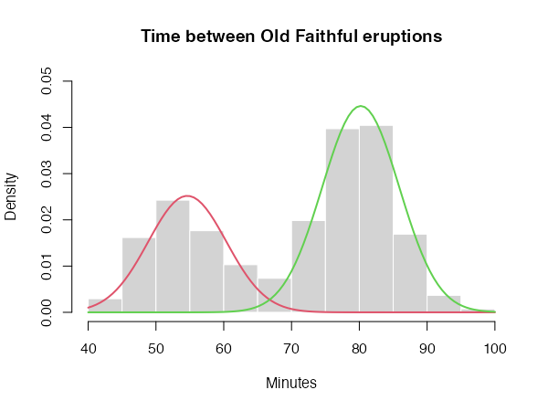
Cluster initialization
Like k-means, the quality of the results produced by CEC depends on the choice of initial cluster centers. The initial locations of the centers can be chosen using the centers.init parameter of the cec function. It can be set to "random" to select the initial centers randomly, or to "kmeans++" to select them via the k-means++ method. It is also recommended to run the clustering algorithm multiple times with different cluster centers. This can easily be achieved using the nstart parameter. For instance,
clusters <- cec(as.matrix(faithful[, 2, drop = FALSE]), 2, method = "kmeans++",
nstart = 10, threads = 4)
clusterswill run the clustering algorithm 10 times, initializing it each time with the output of the k-means++ algorithm. Only the best of the 10 runs (i.e. the run with the lowest cost function) will be returned by the function.
Note that, when nstart > 1, the clustering process can be sped-up by running it in parallel threads using the threads parameter (more details in the package manual).
Other important parameters
card.min represents the minimal cluster size, i.e. the number of points below which a cluster is removed from the analysis. It can be expressed as a number of points or as a percentage of the data set size.
iter.max is the maximum allowed number of iterations of the algorithm at each start. If the algorithm does not converge before iter.max is reached, the function will stop and return the best result so far.
Available Gaussian distributions
One of the most important properties of the CEC algorithm is that it can combined various Gaussian models in the same clustering process. The CEC package includes six Gaussian models, which can be specified via the parameter type. These models are:
General Gaussian distributions
type = "all"
The general Gaussian CEC algorithm gives similar results to those obtained by Gaussian Mixture Models. However, the CEC does not use the EM (Expectation Maximization) approach for minimization but a simple iteration process (Hartigan method). Consequently, larger data sets can be processed in shorter time.
CEC will have a tendency to divide the data into clusters in the shape of ellipses (ellipsoids in higher dimensions). For instance:
data("fourGaussians")
cec <- cec(fourGaussians, centers = 10, type = "all", nstart = 20)
plot(cec, asp = 1)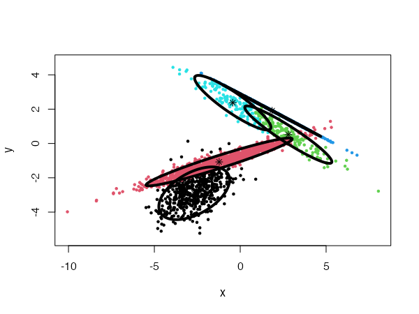
Spherical distributions
type = "spherical"
The original distribution will be approximated by spherical (radial) densities, which will result in splitting the data into disk-like clusters of arbitrary sizes (spheres in higher dimensions).
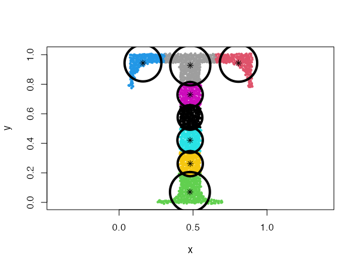
Spherical distributions with fixed radius
type = "fixedr"
Similarly to the general spherical model, the data set will be divided into clusters resembling disks, but with their radius determined by the param argument.
data("Tset")
cec <- cec(x = Tset, centers = 10, type = "fixedr", param = 0.01, nstart = 20)
plot(cec, asp = 1)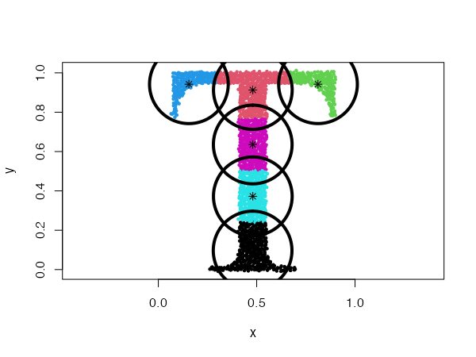
Diagonal distributions
type = "diagonal"
In this case, the data will be described by ellipses for which the main semi-major axes are parallel to the axes of the coordinate system.
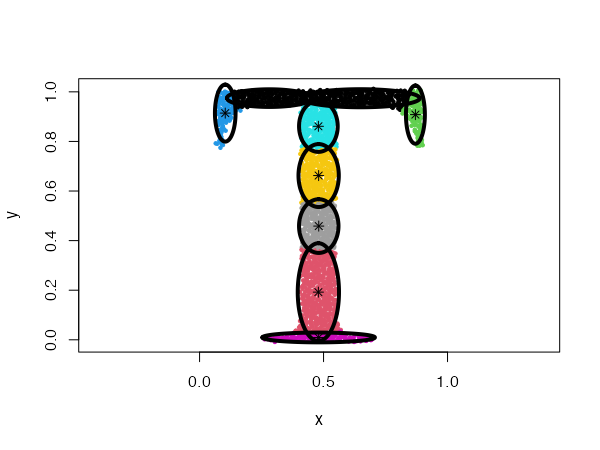
Fixed covariance distributions
type = "covariance"
This model clusters the data using Gaussians with a fixed covariance. The covariance matrix is passed to the param argument.
data("Tset")
cec <- cec(x = Tset, centers = 10, card.min = '10%', type = "covariance",
param = matrix(c(0.04, 0,
0, 0.01), 2))
plot(cec, asp = 1)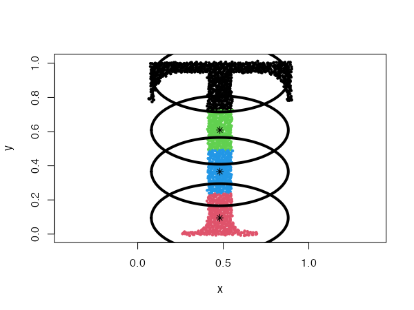
Fixed eigenvalues distributions
type = "eigenvalues"
This is similar to the previous example, but here the Gaussians have fixed eigenvalues. The eigenvalues are passed to the param argument.
data("Tset")
cec <- cec(x = Tset, centers = 10, type = "eigenvalues", param = c(0.01, 0.001),
nstart = 5)
plot(cec, asp = 1)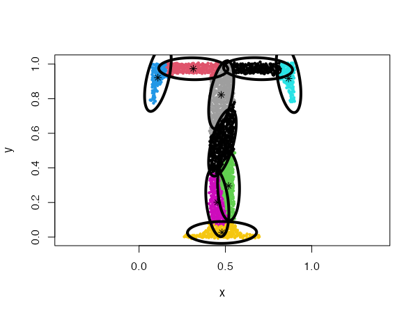
Mixing Gaussian distributions
One of the most powerful properties of the CEC algorithm is the possibility of mixing Gaussian models together. More precisely, the mixed models can be specified by giving a list of cluster types (and a list of corresponding parameters, if needed).
data("mixShapes")
cec <- cec(mixShapes, 7, iter.max = 3,
type = c("fixedr", "fixedr", "eigen", "eigen", "eigen", "eigen", "eigen"),
param = list(350, 350, c(9000, 8), c(9000, 8),
c(9000, 8), c(9000, 8), c(9000, 8)),
nstart = 500, threads = 10)
plot(cec, asp = 1)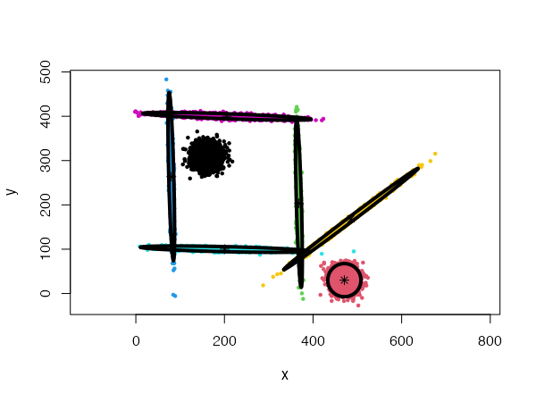
Discovering clusters by splitting
The cec function includes an option to discover new clusters after the initial clustering has occurred. This is done by recursively trying to split each cluster into two smaller clusters that would lower the cost function.
To enable the splitting method, the split argument must be set to TRUE in the cec function. For instance:
data("fourGaussians")
par(mfrow = c(1,2))
# No splitting
cec <- cec(fourGaussians, centers = 1, type = "all")
plot(cec, asp = 1, main = "No splitting")
# With splitting
cec <- cec(fourGaussians, centers = 1, type = "all", split = TRUE)
plot(cec, asp = 1, main = "With splitting")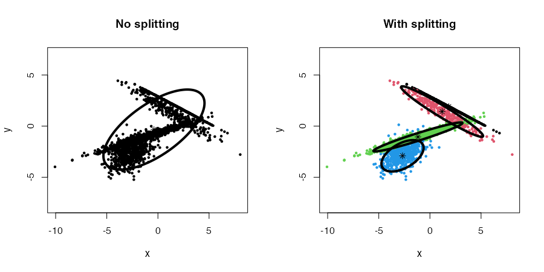
Combined with the nstart parameter, the whole procedure, from start to end (initial clustering and splitting), can be repeated multiple times. In this, case we can also use multiple threads to speed the process up (threads parameter).
Note that the splitting method will be used implicitly when the centers argument is not provided.
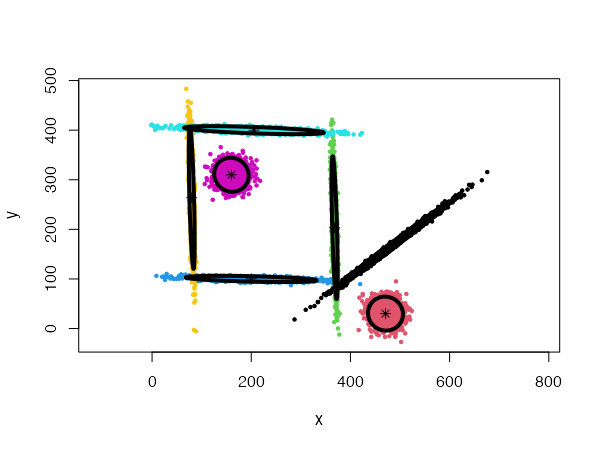
Finally, four parameters control the splitting mode: split.depth, split.tries, split.limit, and split.initial.starts. The description of those parameters and their default values are provided in the package manual. They can be useful to help the algorithm produce meaningful clustering in more complex situations.
For instance, we can generate a data set of 20 Gaussians with the following code:
twenty.gaussians <- matrix(NA, 0, 2)
for (i in 0:19) {
G <- matrix(rnorm(400), 200, 2)
G[,1] <- G[,1] + i %% 5 * 8 + stats::runif(1,-1, 1)
G[,2] <- G[,2] + i %/% 5 * 8 + stats::runif(1,-1, 1)
twenty.gaussians <- rbind(twenty.gaussians, G)
}Using a general Gaussian distributions model (type = 'all') and no initial centers, the algorithm finds easily the 20 Gaussian clusters, and we only need to provide it with a low card.min value.
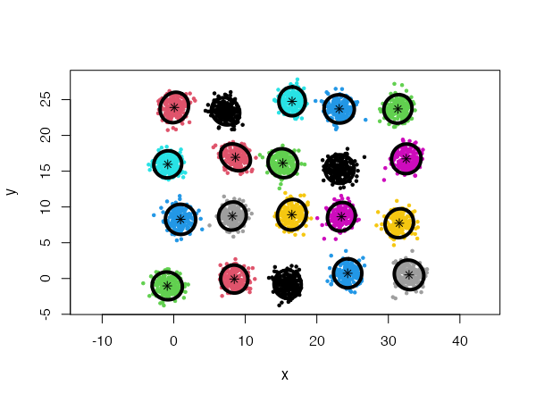
However, using spherical densities (type = 'spherical') on the same data set will lead to sub-optimal results:
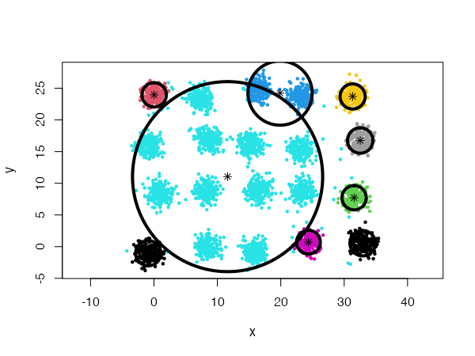
We can help the algorithm identify a more satisfying solution by playing with the split.depth and split.tries parameters, for instance.
cec <- cec(twenty.gaussians, type = "spherical", card.min="1%",
split.depth = 25, split.tries = 15)
plot(cec, asp = 1)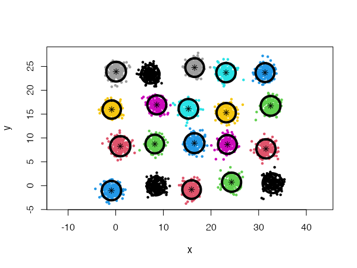
Tabor, J., & Spurek, P. (2014). Cross-entropy clustering. Pattern Recognition, 47(9), 3046–3059. https://doi.org/10.1016/j.patcog.2014.03.006↩︎